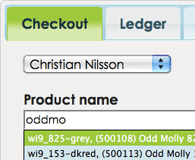
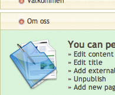
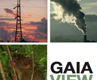
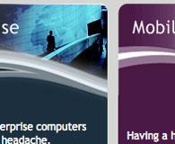
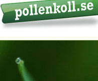
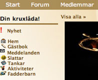

- Technical Project Manager
- Web Apps Architect
- Business Developer
34 (1979-02-18)
Nationality:
Swedish
Currently live:
Malmö, Sweden
Email:
kanzie [at] gmail . com
DiSC-profile:
»View/Download«
Agile, C.T.O. Team-leader, Apple HIG, Blogger, Redmine, Scrum, SMPP, Rock climbing, Knowing how to know, Entrepreneur, Fire Artist, Adventuresome, Enthusiastic, Software Processes, High Availability, Social, jQuery, Design patterns, Unique, Sports, Motivator, MySQL, mongoDB, Inspiring, PHP5, Android, Web Applications, Git, Trivia, UI Evangelist, Visionary, Java, Web standards, Web strategy, Google fanboy, Wizard
- "Christian has one of the fastest and most analytic minds i have ever encountered. Lateral thinking, positive attitude and a healthy amount of curiousity in a package full of kindness and professionalism. I would consider anyone who hires Christian in any form, a winner." - November 22, 2009, Stefan Hallgren - Business developer @ Global Minds AB
- Technical Project Manager
- Web Apps Architect
- Business Developer
34 (1979-02-18)
Nationality:
Swedish
Currently live:
Malmö, Sweden
Email:
kanzie [at] gmail . com
DiSC-profile:
»View/Download«
I have a burning passion for life and all it has to offer! This open mindset inspires me to try new things, build relationships with people and confront new challenges. My past experiences are diverse and make up who I am; working in a traveling circus at age 13, founding a successful dot.com at age 20, working for burmese refugees rights in Asia and Sweden, climbing the large corporation career ladder, bar manager in London and C.T.O at one of the fastest growing SMS aggregators in the world. I come from a family of entrepreneurs and have always been driven to make the best of every situation. During college I was an active member of several student organizations and was heavily involved in politics. My ability to motivate people and sense of humor has made me a valuable asset to all of these groups. Mix in a little skydiving, skateboarding, fire juggling, story-telling, acting and you have me! I think of life as a role-playing game and believe that everything should be tried once because regardless of the outcome, I've gained valuable experience-points.
I'm a technical project manager with a diverse background in IT and thrive when working alongside creative, high energy people. I often approach projects from a business development standpoint in order to provide a fitting solution. My ability to see patterns and find new angles to problems without re-inventing the wheel makes me valuable to most organizations. I am comfortable confronting complex systems and situations and quickly cut through the minor issues en route to a prompt solution.
I have worked as a developer, team-leader and project manager with focus on web-related systems (no, I don't design home pages!) for more than 15 years. Much of my spare time is spent researching new techniques and keeping relevant with all the rumors, news and cutting edge developments from the IT world. I don't consider myself a programmer but do spend a substantial amount of time hammering away at code. With several years of system-architecture and a software engineer education in my backpack I'm accomplished in the building and scaling of prototypes as well as proof-of-concept solutions. I love raw-data and believe it is the foundation of all good systems and decisions. As a result, I spend a significant amount of time normalizing data, tinkering with datasets and exploring databases.
I am fluent in English and Swedish with a decent grasp of German. When at a loss for words, I tend to gesture wildly in hopes of bridging the language gap. All joking aside, communication is one of my biggest assets. It extends beyond everyday conversation to being a confident public speaker and a great author of documentation. I respect the opportunity that arises when communication thrives and ideas and thoughts are cultivated. I strive to inspire and am motivated to bring out the best in people.
As a project-manager I am appreciated for my abilities to make thorough plans as well as apply processes and methods to aid resources in reaching the common goal. I like Gantts and love burndown-charts. I have always been able to solve the problems that were put in front of me by learning about the particular field, dissecting the relevant factors and becoming acquainted with the underlying issues.
I am good in team-leader and management-roles but also positions that involves development, technical sales, internal marketing and training. I look at the prospect of re-locating to another country for work as an opportunity, not a burden and enjoy business travel.
My interests involve a wide range of activities spanning from doing fire-shows to nerd out over some weird topic. I recently discovered rock-climbing and it quickly became a new passion. Other than that I surf and enjoy spending time in the gym. I try to travel at least once a year and have a small cottage in the north of Sweden that I strive to maintain upkeep on. I collect trivia and useless knowledge like a leprechaun collects gold and love to tell stories. What I do for a living is also a large part of my life. As such, I have to believe in it and enjoy it. I believe that it is possible to get rich without doing harm and that is my ambition.
Over the years I have had the good fortune to work with some amazing people. A life long search for role-models and mentors is a valuable and important quest for me. Maybe we will have the pleasure of working together someday.
I'm Christian
|
University College of Malmö /B.S. Computer Science |
Let's get nerdy! I love the academic world and the freedom it grants you to immerse yourself in knowledge. It allows you to try new things and encourages failure, it challenges you to try new things and reminds you to stand on the already existing shoulders of giants! I have finished a Bachelors degree in Computer Science where I have specialized in mobile platforms such as Android-development and iOS. I achieved highest grades in most courses and I also worked as T.A. during my education at the same time I was contracted at Beepsend. My thesis paper on user interface design saw a lot of recognition and has been known to be used as reference reading at Apple Australia. |
|
|
2010-2012 |
||
|
Apple Training /APP |
Apple Products Professional certification Apple's rapid growth and consistent popularity has created a demand for proficiency of their hardware and software. "The Apple Sales Training Online Program" is a self-paced learning program specifically designed, and only available, for individuals who sell, support or use Apple products and solutions to a larger extent. Because of my familiarity with Apple products and that many of my employments has required knowledge in Apple-products I certified myself to "Products Professional", the highest rank in the Apple Sales Training-certification course when the opportunity was presented to me. |
|
|
2009 |
||
|
UCSD /Social Science |
To change the world, understand it! My interest in the structure of a global world and its history has led me to study social sciences and international politics. In my travels and my studies for a teachers-degree, I often end up discussing the role of U.S. politics in the world and decided I wanted a better understanding of the nuts and bolts of it. In 2008, I enrolled at UCSD taking classes in The Presidency, US Foreign Policy and International Crisis Diplomacy which gave me several new perspectives on the topics. Overall this gave me further understanding of interpreting the motives behind countries actions as well as how companies best align themselves for advantages in the future. The courses in crisis diplomacy taught me how to stay organized, calm and collected when working with impossible odds in extreme chaos. |
|
|
2008-2009 |
||
|
University of Göteborg /Teacher-credentials |
It is when you teach, you learn the most I believe there is nothing more rewarding than inspiring others. Being able to communicate on the level of each recipient, explain complex subjects by creative experiments and involving people. This comes natural to some people, me included but having theory to back it up is a powerful tool. I decided to pursue a teachers degree as this education will be of great use to me indifferent of which job I do in the future, the need for good teacher-abilities can not be underestimated. |
|
|
2007-2008 |
||
|
University of Göteborg /Software Engineering |
Engineers build the stage on which we all dance and shine This education was directed to people interested in becoming project managers, architects and quality managers. In particular in medium and large software projects. The programme focuses on three key roles in software system development: Software Project Manager, Software Architect, and Software Quality Manager with special attention to embedded and mobile software development. The key perspectives of each of these roles are:
I spearheaded several interesting project including a GIS-system for NGO's to communicate, practiced and experimented with pro's and con's of different software processes, researched logic, algorithms, datastructures as well as set-languages and embedded languages and finished with excellent grades. |
|
|
2006-2007 |
||
|
Wenell /Project Management |
Good management comes from experience Wenell Management AB was founded more than 40 years ago and is today one of Scandinavia's leading consultant companies in project management. They achieve this by collecting, further developing and spreading project expertise in many different forms. I was lucky to be rewarded a course in effiecent project management at Wenells when working at Observer Group. This made me a better planner and coordinator and was invaluable. |
|
|
2001 |
||
|
Beepsend /C.T.O |
Assignment: Put software processes and coordination in place Beepsend is, despite its relatively small size, one of the largest SMS aggregators in the world. Beepsend hosts their own SMSC and handles traffic for many operators, aggregators and services around the world including companies such as Google and Facebook. They presently have developers in several countries, many different hosting-solutions and a multitude of different systems which needed coordination as well as an established software development processes for each team. My task is to improve quality and speed of support, establish a standardized way to plan and coordinate development as well as oversee system and software-architechture. I designed their new engine and software architecture with HA and redundancy as key criteria, I consolidated their hardware, established routines and systems for handling first- and second-line support as well as tools and processes for all development. I am an integral part of the management team and work with business development. "Christian is the guru of project leading. Being able to swiftly shift focus from tricky details to general technology strategies, Christian excels in providing a clear-cut view on each project he's involved in. He is also master of outlining and drawing up company work-flows as they are, and efficiently improve them both conceptually and practically. Indeed, he is a true asset!" - Rikard Edsgard, Vice President, Beepsend AB 2011 |
|
|
2009 - Present |
||
|
Tunaspot /C.T.O |
Assignment: Show how the world sounds Tunaspot is a unique startup based out of Sweden. It is a geospatial system to show where music is located in the world. Tunaspot offers a comprehensive API for clients to utilize as well as several clients themselves. I am responsible for architecture and development roadmap. Tunaspot can be found in Spotify, on iOS and on Blackberry with more services and clients in the works! It has been awarded in the Lovie awards, recognized in magazines such as Evolver.fm and Wired UK. “Christian has a very rare combination of deep understanding of both the business side and the tech side of a tech-driven company. He is very good at leading a tech team on site or remotely (Skype and email) towards a defined release candidate goal. Then he shifts seamlessly into a well-speaking, hard selling business developer when it comes to meeting investors, customers and partners. It's inspiring to watch.” - Alex Esser, President, Tunaspot AB 2012 |
|
|
2012 - Present |
||
|
PBS Biotech /Lead UI Developer |
Assignment: Build the most novel experience in medicine to date PBS Biotech is a California based company that has a revolutionary way of growing cell culture in medical facilities. When re-inventing the method to use they also wanted to take UX for medical equipment to the 21:st century. I was hired as consultant to help them design the backend interface and build the UI for all clients from the bottom up. Additionally to this I set up issue tracking and assisted in deployment routines. I worked closely with the engineers to make the most optimized experience possible by using Apple HIG, user studies and iterative development. |
|
|
2009 - 2011 |
||
|
Strandhem /Counselor |
Assignment: Summer-camp for kids, be a role-model, alert and inspiring! I really enjoy working with kids and summer-camp is a great moment to inspire, teach and learn from kids. At this particular camp each counselor have responsibility for groups of 6 kids and each summer you have three to five groups. My kids had a certain focus which was problems at home or issues with social interactions. I was handpicked for this due to my diverse background working with these sorts of individuals. I was very appriciated as a responsible, fun and imaginative counselor that always had a trick or a story up my sleeve. |
|
|
2008 |
||
|
deepFLING /Project Manager |
Assignment: Assist transformation of a startup to an established company deepFLING has in only a few years grown from a side-business to full-fledged retailer with online webshop as well as a physical store (with walls and a roof), employing several people and handle large amounts of shipping on a daily basis. This kind of exponential growth puts pressure on routines and efficiency. I helped the company get rid of ad-hoq solutions and time-consuming processes by developing a new point-of-sale system, streamline order-handling and by making day-to-day routines fun and simple. My firm belief that computers are meant to assist and help users, not the other way around, guided my work when I interviewed staff and designed new processes. It has been a blast and my work there has been very appriciated. "We hired Chris to help us develop a custom POS checkout system to work with our existing webstore & database of over 7000 SKUs. Chris didn't only do the actual development work, but also developed the plan and implementation map, which he (and we) all followed through. We've been live this way since April 2009, and our business will never be the same again!" - Kevin Doyle 2009 |
|
|
2008 - current |
||
|
C-Works /CEO |
Assignment: Help $COMPANY be awesome at $THING JoelOnSoftware said it so brilliantly. Based on a similar chain of thought I founded a small consultancy-firm, specializing in lectures about new (social) media and technology, help development teams plan and coordinate development and design great software that brings existing business-models to the web. The company has been very successful albeit as a single resource lonely at times. My intention is not to grow, but be a one-man company, however my heart is in working with groups of people achieving a greater goal. "To work with Christian is a delight. He is one of the most motivated persons I have ever worked with. Christian is a very high skilled engineer, but also a great leader." - Karl Annerhult 2009 |
|
|
2004 - current |
||
|
Cision /Project Manager |
Assignment: Create the best online real-time search on the web In 1892 - Observer was founded as the only service to monitor and interpret what was communicated in "media", a very loose term at the time. In 1999 Agent25.se opened its business with automated search-agents and became the first real competitor to Observer. The digital age had changed the rules of the game and Observer needed to understand it fast. This led to the recruitment of me as a visionary to explain where the market was going and what Observers role in it could be. In 2001 a brain-trust with me and a few others presented our solution and a re-vamped business model to the board. Through this I was granted funding to spearhead the design and implementation of a system that in real-time would scan electronic sources, parse them and use the existing search-terms from customers to filter the content. If would also allow for manual verification and analysis, as well as direct delivery in several channel. All this technology and the concepts was unheard of at the time and the system turned out to be a huge success. Today this is the main product of a revamped and reformed Observer, now named Cision and this has spearheaded my career from that date onwards. "It is rare to find the combination of displayed personal and professional characteristics found in Christian; honesty, integrity and dedication combined with in-depth technical knowledge, holisitc perspecive and business strategic understanding." - Kristian Veem 2009 |
|
|
2000 - 2002 |
||
Summary
- »View DiSC-test for Christian« - Inspirational Pattern
- Great in team environments, able to multi-task & work within deadlines
- Have worked in several different countries & cultures
- Efficient problem-solver with good bigger-picture abilities
- Qualified developer of validated cross-browser websites & web applications
- Comfortable in popular browsers & operating system environments, excels in OSX
Entrepreneurial-skills
- Great at task-oriented approaches
- Responsible and analytical approach to assignments
- Driven to introducing new methods, technologies and processes
- Pedagogical and good mentoring-abilites
- Realistic visionary and proficient in public speaking
Communication-skills
- Languages:
- Swedish - excellent verbal and written (native)
- English - excellent verbal and written
- German - good verbal and poor written
- Good at customizing the information to different recipients and purposes
IT & Development-skills
- Core
- Usage of source control-systems and routines for collaboration in development
- Project- and Resource-management using tools such as Gantt & Burndown
- Proven aptitude for quick creative thinking with high level of attention to details
- Comprehensive understanding of interactivity and Web. Strict follower of web standards and semantic coding
- Ability to articulate creative ideas
- Good ability to lead and inspire teams
- Self motivated, organized and accountable
- Languages:
- C# (.NET MVC3)
- CSS
- HTML5/XHTML
- Java (Android)
- jQuery Javascript framework
- Objective-C (iOS)
- PHP5 OOP
- SQL
- Ruby On Rails
- Software (most used):
- Eclipse
- XCode
- Coda
- Firebug
- MySQL/SQL Server/PostgreSQL
- phpMyAdmin
- Photoshop
- OmniPlan
- Mercurial/GIT
- Redmine/Trac
- Platforms:
- OSX
- Windows
- Linux
- Software Processes:
- SCRUM (and common modifications)
- Waterfall
- Established Change Request Handling
Community
- Organizations:
- Founder - Eldsjal (www.eldsjal.org)
- Coordinator - Swedish-Burmese Human Rights Organization
- President - Student board Wargentinskolan college
- President - Junsels schools student-body

deepFLING - P.O.S.
A versatile point-of-sale system with central inventory-handling that I designed and developed for client. It is today their main system for retail-stores

Tabula Rasa - CMS
A very capable and customizable CMS that I designed and developed for a large coorporation and used all over the world

Gaiaview - Concept
A web2.0-service for NGO's to map out their work using Google Maps that I designed and developed
Eldsjäl - community
A community I built in 2002 to support an organization I started focused on fire-artists and other strange performers. It has around 2000 active members and is alive and kicking to this day

Tific - website
A truly high-tech company needed a very special new website with dynamic back-end that I mapped up and developed

Pollenkoll - SMS
I designed and developed a SMS-alert service with daily notifications of pollen-levels in air

LiveState - platform
I rewrote the community-prototype into an improved and full-fledged open-source community-platform

Betglucare - shop
A lean and nice webshop with credit-card payments embedded I planned and developed for client
Papers:
- Good artists copy, great artists steal [Eng, PDF, 43 pages]
- A study in usability where the use of established theories and practices in user interface design were analyzed on a bioreactor-system.
- In the digital campaign-trail [Eng, PDF, 7 pages]
- This paper takes a quick glance as to the differences between McCain and Obamas campaign-strategies and how that might have affected the outcome of the election.
- Analys av pedagogiks betydelse vid dyslexi [Swe, PDF, 10 pages]
- A paper I wrote about how different methods of pedagogics can be used to bridge the problems of ADHD and dyslexia in a school-environment.
- The U.S. invasion of Iraq [Eng, PDF, 7 pages]
- An indepth look as to which reasons and gains the U.S. might have had behind an invasion of Iraq 2003.
- A comparison of U.S. and U.K. citizens view of Government control [Eng, PDF, 4 pages]
- An brief look at what the main differences between citizens in the U.S. and citizens in the U.K. think about governmental control from a historical perspective.
- A study of the personality of software pirates [Swe, PDF, 7 pages]
- A paper where I dissect the different groups of people that dabbles with illegal downloading of copyrighted material and their idea of themselves.
- Media convergance, news-transformation and source critisism. - a lesson plan [Swe, PDF, 10 pages]
- This paper is a complete plan on how one could go about introducing college-kids to the concepts of online news, power and shape of blogs, micro-blogs and streams. It also covers a discussion of the changing role of the journalist in tomorrows media-world.